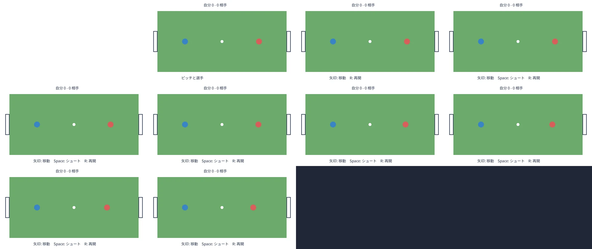
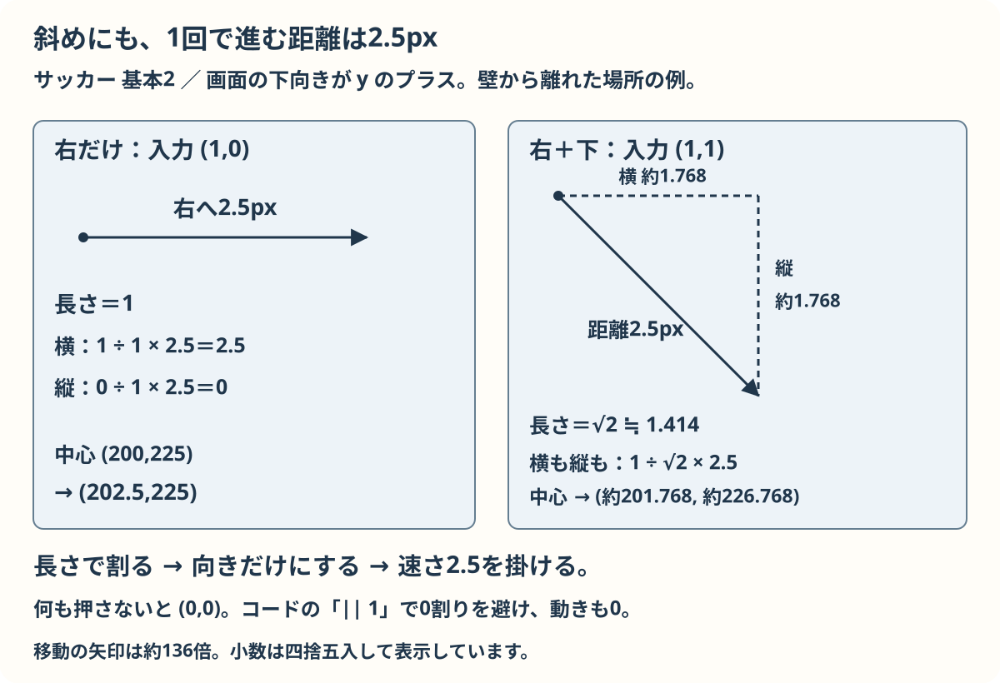
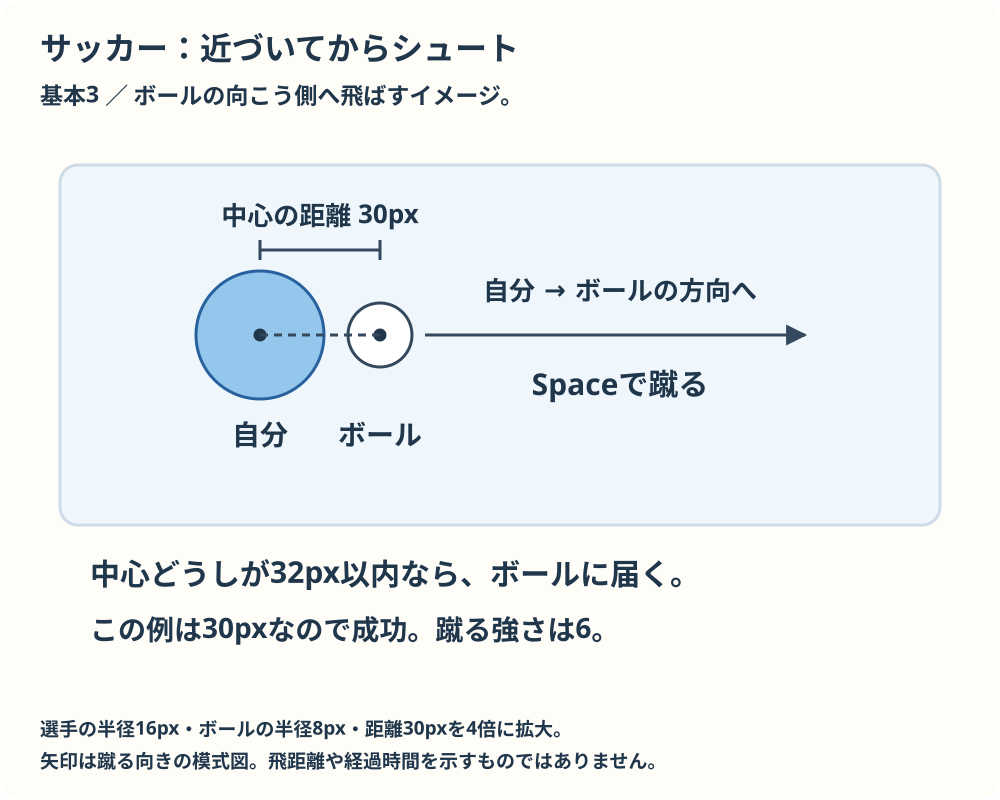
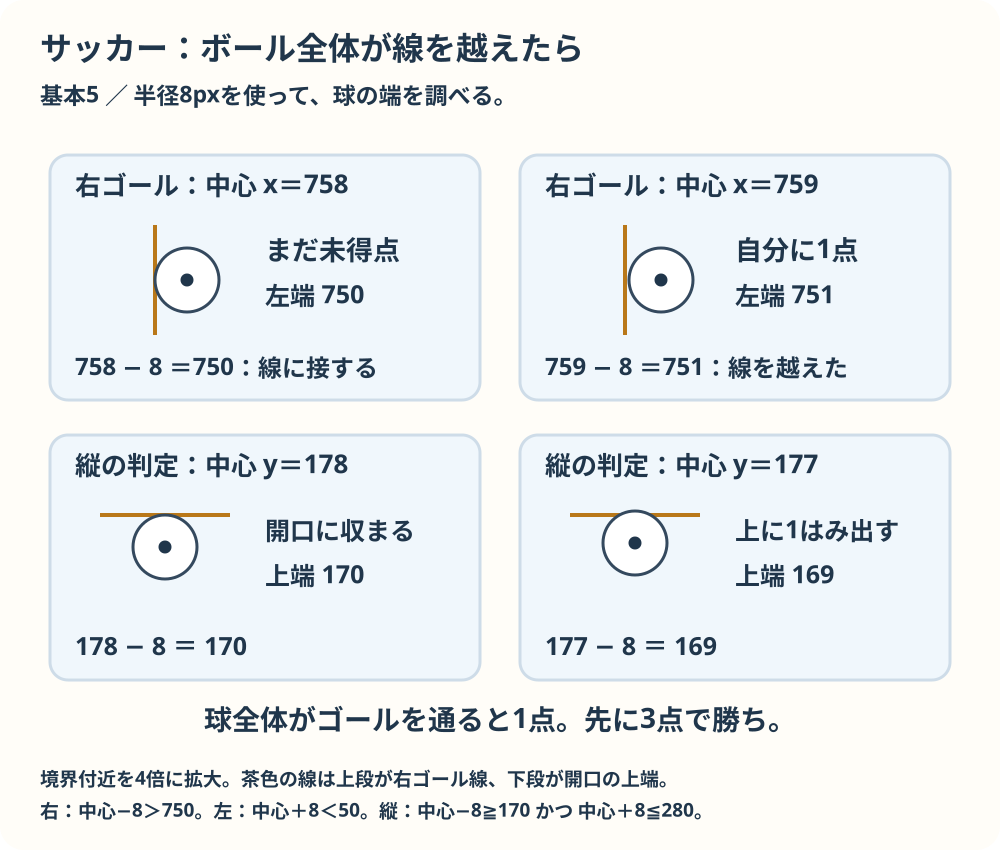

1対1サッカーを作る
始める前に
ZIPを展開してできたフォルダーでindex.htmlを開きます。ZIPにはひな型の3ファイルが入っています。
WindowsでZIPを展開する（動画）
各段階の変更を上から順に加え、保存したら index.html を開くか再読み込みします。
ステップ 1：ピッチと選手を描く
このステップの見本を図で見る
new Player(200); new Player(600)
左右に選手を描く
new Ball() → x=400,y=225
選手の中間にボールを描く
ゲーム画面とコードの前後を見る

このステップの見本
この行を足す前 変わったコードの一例（script.js）
ctx.fillStyle = "#26334a"; ctx.font = "20px sans-serif";
見本で確かめること
ピッチ、両ゴール、青と赤の選手、ボールが表示されます。
目標
サッカーの動きを順番に作ります。
作業用フォルダーの script.js を開き、下の小作業を順に進めます。確認欄で保存して見本と比べます。
選手のクラスを用意する
先頭の ctx の宣言の下に追加します。
目印
const ctx = canvas.getContext("2d");追加するコード
class Player {
}class は同じ性質を持つものを作るための型です。まず選手の Player を作り、次に中身を加えます。
選手の位置と色を決める
Player の空のクラスを置き換えます。
置き換える範囲
class Player {
}置き換えるコード
class Player {
constructor(x, color) { this.x = x; this.y = 225; this.color = color; }
}constructor は選手を作るときに実行されます。引数 x と color をその選手自身の横位置と色に保存し、縦位置は225にします。this は作られた選手自身です。= は右の値を左に入れる代入、; は文の区切りです。
選手を円で描く
Player の constructor の行の下に追加します。
目印
constructor(x, color) { this.x = x; this.y = 225; this.color = color; }追加するコード
draw() { ctx.fillStyle = this.color; ctx.beginPath(); ctx.arc(this.x, this.y, 16, 0, Math.PI * 2); ctx.fill(); }選手の色を選び、保存した位置を中心に半径16の円を塗ります。Math.PI * 2 は円を1周する角度です。
ボールのクラスを作る
Player クラスの終わりの下に追加します。
目印
class Player {
constructor(x, color) { this.x = x; this.y = 225; this.color = color; }
draw() { ctx.fillStyle = this.color; ctx.beginPath(); ctx.arc(this.x, this.y, 16, 0, Math.PI * 2); ctx.fill(); }
}追加するコード
class Ball {
constructor() { this.x = 400; this.y = 225; this.vx = 0; this.vy = 0; }
draw() { ctx.fillStyle = "#ffffff"; ctx.beginPath(); ctx.arc(this.x, this.y, 8, 0, Math.PI * 2); ctx.fill(); }
}ボールは中心 (400, 225)、半径8の白い円です。vx と vy は横と縦の速度で、最初はどちらも0です。
試合のクラスを用意する
Ball クラスの終わりの下に追加します。
目印
class Ball {
constructor() { this.x = 400; this.y = 225; this.vx = 0; this.vy = 0; }
draw() { ctx.fillStyle = "#ffffff"; ctx.beginPath(); ctx.arc(this.x, this.y, 8, 0, Math.PI * 2); ctx.fill(); }
}追加するコード
class Game {
}Game に選手、ボール、得点と試合の状態をまとめます。
試合の初期状態を作る
空の Game クラスを置き換えます。
置き換える範囲
class Game {
}置き換えるコード
class Game {
constructor() {
this.player = new Player(200, "#3984c6"); this.rival = new Player(600, "#d85e59");
this.ball = new Ball(); this.score = 0; this.opponentScore = 0; this.state = "playing"; this.cooldown = 0;
this.keys = {};
}
}new で自分の青い選手、赤い相手、ボールを別々に作ります。横位置は200と600、得点は両方0です。state はプレイ中、cooldown は相手が次に蹴るまでの待ち時間、keys は押されたキーを記録します。
選手とボールの位置を戻す
Game の constructor() を閉じる行の後に追加します。
目印
this.keys = {};
}追加するコード
resetPositions() {
this.player.x = 200; this.player.y = 225; this.rival.x = 600; this.rival.y = 225; this.ball = new Ball(); this.cooldown = 0;
}resetPositions() は両選手を初期位置に戻し、新しいボールを用意します。相手の待ち時間も0にします。
試合を覚える変数を用意する
Game クラスの終わりの下に追加します。
目印
resetPositions() {
this.player.x = 200; this.player.y = 225; this.rival.x = 600; this.rival.y = 225; this.ball = new Ball(); this.cooldown = 0;
}
}追加するコード
let game;let は後から値を入れ直せる変数を作ります。game に試合の実体を入れます。
試合を始める
start() と続く update() の範囲を置き換えます。
置き換える範囲
function start() {
}
function update() {
}置き換えるコード
function start() {
game = new Game();
}
function update() {
}start() が new Game() で試合を作ります。この段階の update() は空なので、まだ動きません。
ピッチを描く
draw() の画面を消す行から次の関数の先頭までを置き換えます。
置き換える範囲
ctx.clearRect(0, 0, canvas.width, canvas.height);
}
function gameLoop() {置き換えるコード
ctx.clearRect(0, 0, canvas.width, canvas.height);
ctx.fillStyle = "#6ca96c"; ctx.fillRect(50, 60, 700, 330);
}
function gameLoop() {画面を消してから左上 (50, 60)、幅700、高さ330の緑のピッチを描きます。画面の左上が (0, 0) で、xは右、yは下へ増えます。後ろの gameLoop() の先頭行も残します。
ゴールの線と枠を描く
draw() のピッチを描く行の下に追加します。
目印
ctx.fillStyle = "#6ca96c"; ctx.fillRect(50, 60, 700, 330);追加するコード
ctx.fillStyle = "#ffffff";
ctx.fillRect(49, 60, 2, 110); ctx.fillRect(49, 280, 2, 110);
ctx.fillRect(749, 60, 2, 110); ctx.fillRect(749, 280, 2, 110);
ctx.strokeStyle = "#26334a"; ctx.lineWidth = 3;
ctx.strokeRect(30, 170, 20, 110); ctx.strokeRect(750, 170, 20, 110);左右に白い線とゴールの枠を描きます。ゴールの開口は縦170から280の間です。
選手とボールを描く
右側のゴール枠を描く行の下に追加します。
目印
ctx.strokeRect(30, 170, 20, 110); ctx.strokeRect(750, 170, 20, 110);追加するコード
game.player.draw(); game.rival.draw(); game.ball.draw();それぞれの draw() を呼び、2人の選手とボールを描きます。
得点と案内を表示する
選手とボールを描く行の下に追加します。
目印
game.player.draw(); game.rival.draw(); game.ball.draw();追加するコード
ctx.fillStyle = "#26334a"; ctx.font = "20px sans-serif";
ctx.fillText("自分 " + game.score + " - " + game.opponentScore + " 相手", 300, 35);
ctx.fillText("ピッチと選手", 180, 430);+ で文字と得点をつなぎ、画面上に自分と相手の得点を表示します。
保存後の確認
保存してゲーム画面を更新する（動画）
index.html を再読み込みします。ピッチ、両ゴール、青と赤の選手、ボールが表示されます。 この段階の見本を開く
小さな練習
色を変えて比べます。 練習後はコードを元に戻してください。
ステップ 2：選手を動かす
このステップの見本を図で見る
200 + 1 × 2.5 = 202.5
右へ2.5px
200 + 0 × 2.5 = 200
その場で止まる
200 - 1 × 2.5 = 197.5
左へ2.5px
ゲーム画面とコードの前後を見る
このステップの見本
この行を足す前 変わったコードの一例（script.js）
let dx = (this.keys.ArrowRight ? 1 : 0) - (this.keys.ArrowLeft ? 1 : 0);
見本で確かめること
矢印キーで青い選手が動き、キーを離すと止まります。
目標
サッカーの動きを順番に作ります。
作業用フォルダーの script.js を開き、下の小作業を順に進めます。確認欄で保存して見本と比べます。
更新するメソッドを作る
Game の resetPositions() 全体の下に追加します。
目印
resetPositions() {
this.player.x = 200; this.player.y = 225; this.rival.x = 600; this.rival.y = 225; this.ball = new Ball(); this.cooldown = 0;
}追加するコード
update() {
}Game の update() に、プレイ中の移動処理を順に加えます。
プレイ中だけ自分を動かす
Game の update() の先頭行の下に追加します。
目印
update() {追加するコード
if (this.state !== "playing") return;
const p = this.player;!== は同じではないという比較です。プレイ中でなければ return で終え、p には自分の選手を入れます。
押したキーで方向を決める
const p = this.player; の下に追加します。
目印
const p = this.player;追加するコード
let dx = (this.keys.ArrowRight ? 1 : 0) - (this.keys.ArrowLeft ? 1 : 0);
let dy = (this.keys.ArrowDown ? 1 : 0) - (this.keys.ArrowUp ? 1 : 0);右なら dx は1、左なら-1、下なら dy は1、上なら-1です。反対方向を両方押すと差は0です。条件 ? A : B は条件が真ならA、それ以外ならBを選びます。
斜め移動の速さをそろえる
dy を決める行の下に追加します。
目印
let dy = (this.keys.ArrowDown ? 1 : 0) - (this.keys.ArrowUp ? 1 : 0);追加するコード
const length = Math.hypot(dx, dy) || 1; dx /= length; dy /= length;
const speed = 2.5;Math.hypot は方向の長さです。斜め (1, 1) の長さは約1.41なので両方を割ると、まっすぐより速くなりません。入力がないときは || 1 で0による割り算を避けます。1回の更新の速さは2.5です。

右と下を同時に押すと入力は (1, 1) になり、長さは√2です。長さで割ってから速さ2.5を掛けるので、斜めも1回の移動距離は2.5になります。何も押していないときは || 1 で0による割り算を避け、動きは0のままです。図は壁から離れた場所の例です。
ピッチから出ない位置にする
const speed = 2.5; の下に追加します。
目印
const speed = 2.5;追加するコード
p.x = Math.max(66, Math.min(734, p.x + dx * speed));
p.y = Math.max(76, Math.min(374, p.y + dy * speed));Math.min で右・下、Math.max で左・上の限界を守ります。ピッチの左端50と上端60に選手の半径16を足すと66と76です。
毎回の更新で移動する
外側にある function update() を置き換えます。
置き換える範囲
function update() {
}置き換えるコード
function update() {
game.update();
}ひな型のゲームループが呼ぶ update() から、試合の game.update() を呼びます。
操作案内を表示する
draw() の「ピッチと選手」の表示を置き換えます。
置き換える範囲
ctx.fillText("ピッチと選手", 180, 430);置き換えるコード
ctx.fillText("矢印: 移動 R: 再開", 180, 430);矢印キーで移動し、Rで再開できることを表示します。
キーを受け取る場所を用意する
draw() と gameLoop() の間の範囲を置き換えます。
置き換える範囲
function gameLoop() {置き換えるコード
window.addEventListener("keydown", event => {
});
window.addEventListener("keyup", event => {
});
window.addEventListener("blur", () => { game.keys = {}; });
function gameLoop() {keydown はキーを押したとき、keyup は離したときです。blur では別の画面へ移るなど入力を受け取れなくなったときに記録を空にします。後ろの gameLoop() の先頭行は残します。
押したキーを記録する
keydown を登録する行の下に追加します。
目印
window.addEventListener("keydown", event => {追加するコード
const key = event.key;
if (!event.repeat && key.toLowerCase() === "r") { start(); return; }
if (["ArrowLeft", "ArrowRight", "ArrowUp", "ArrowDown", " "].includes(key)) event.preventDefault();
if (["ArrowLeft", "ArrowRight", "ArrowUp", "ArrowDown", "Shift"].includes(key)) game.keys[key] = true;event.key は押されたキーです。Rは押し始めに start() で再開します。includes() で矢印などを調べ、ブラウザーのスクロールを防ぎ、押されたキーを true として記録します。
離したキーを解除する
keyup を登録する行の下に追加します。
目印
window.addEventListener("keyup", event => {追加するコード
game.keys[event.key] = false;離されたキーの記録を false に戻すので、押している間だけ移動します。
保存後の確認
矢印キーで青い選手が動き、キーを離すと止まります。 この段階の見本を開く
小さな練習
色を変えて比べます。 練習後はコードを元に戻してください。
ステップ 3：ボールを蹴る
このステップの見本を図で見る
400 - 367 = 33 > 32
届かない。静止したまま
400 - 368 = 32 <= 32
右へ速度6で蹴る
x=400+6; vx=6×0.99=5.94
6px進み、速度は5.94へ減る
ゲーム画面とコードの前後を見る
このステップの見本
この行を足す前 変わったコードの一例（script.js）
if (distance <= 32) {
見本で確かめること
ボールに近づいてSpaceを押すと、ボールが進んで減速します。
目標
サッカーの動きを順番に作ります。
作業用フォルダーの script.js を開き、下の小作業を順に進めます。確認欄で保存して見本と比べます。
シュートのメソッドを作る
Game の update() の行のすぐ上に追加します。
目印
update() {追加するコード
kick(player, power) {
return false;
}kick(player, power) は蹴る選手と速さを受け取ります。まだ蹴れなければ false を返します。
選手とボールの距離を調べる
kick(player, power) の行の下に追加します。
目印
kick(player, power) {追加するコード
const dx = this.ball.x - player.x, dy = this.ball.y - player.y;
const distance = Math.hypot(dx, dy);
if (distance <= 32) {
}dx と dy は選手からボールへの横と縦の差、Math.hypot は中心間距離です。距離32以下なら波括弧の中で蹴ります。

ボールに近づいてSpaceを押しましょう。選手とボールの中心が32px以内なら蹴れます。ボールは選手からボールへ向かう方向に飛びます。
半径16pxと8px、中心間距離30pxの成功例を4倍で描画。矢印は方向のみで飛距離ではない。通常の強さは6。
近ければ蹴る方向と速さを決める
kick() の距離を調べる行の下に追加します。
目印
if (distance <= 32) {追加するコード
const direction = distance === 0 ? (player === this.player ? 1 : -1) : dx / distance;
this.ball.vx = direction * power; this.ball.vy = distance === 0 ? 0 : dy / distance * power;
return true;距離が0より大きければ横と縦の差を距離で割り、方向の割合に power を掛けます。中心が完全に重なった場合は0で割らず、自分なら右、相手なら左へ蹴り、縦速度は0です。蹴れたら true を返します。
速度でボールを動かす
Game の update() で選手の縦位置を決める行の下に追加します。
目印
p.y = Math.max(76, Math.min(374, p.y + dy * speed));追加するコード
const b = this.ball;
b.x += b.vx; b.y += b.vy; b.vx *= 0.99; b.vy *= 0.99;b はボールです。速度 vx と vy を位置に足した後、それぞれ0.99倍して少しずつ減速します。
上下の端で反射させる
ボールの位置と速度を更新する行の下に追加します。
目印
b.x += b.vx; b.y += b.vy; b.vx *= 0.99; b.vy *= 0.99;追加するコード
if (b.y < 68) { b.y = 68; b.vy = Math.abs(b.vy); }
if (b.y > 382) { b.y = 382; b.vy = -Math.abs(b.vy); }半径8のボールの中心を上端68、下端382に戻します。Math.abs で上では下向きの正、下では上向きの負にして反射します。
左右の端でも反射させる
下端の判定の行の下に追加します。
目印
if (b.y > 382) { b.y = 382; b.vy = -Math.abs(b.vy); }追加するコード
if (b.x < 58) { b.x = 58; b.vx = Math.abs(b.vx); }
if (b.x > 742) { b.x = 742; b.vx = -Math.abs(b.vx); }この段階では左右も壁です。中心を58か742に戻して横速度の向きを反対にします。
シュートの操作を表示する
draw() の操作案内を置き換えます。
置き換える範囲
ctx.fillText("矢印: 移動 R: 再開", 180, 430);置き換えるコード
ctx.fillText("矢印: 移動 Space: シュート R: 再開", 180, 430);Spaceでシュートする案内を加えます。
Spaceでシュートする
keydown のキーを記録する行の下に追加します。
目印
if (["ArrowLeft", "ArrowRight", "ArrowUp", "ArrowDown", "Shift"].includes(key)) game.keys[key] = true;追加するコード
if (key === " " && !event.repeat && game.state === "playing") game.kick(game.player, 6);Spaceの event.key は半角スペースです。押し始めでプレイ中なら、自分の選手と速さ6を kick() に渡します。
保存後の確認
ボールに近づいてSpaceを押すと、ボールが進んで減速します。 この段階の見本を開く
小さな練習
色を変えて比べます。 練習後はコードを元に戻してください。
ステップ 4：相手を動かす
このステップの見本を図で見る
このステップの見本
この行を足す前 変わったコードの一例（script.js）
if (distance > 24) { const speed = 0.8; r.x += rx / distance * speed; r.y += ry / distance * speed; }
見本で確かめること
相手がボールへ近づき、近いときに左へ蹴ります。
目標
サッカーの動きを順番に作ります。
作業用フォルダーの script.js を開き、下の小作業を順に進めます。確認欄で保存して見本と比べます。
相手とボールを取り出す
Game の update() で自分の縦位置を決める行の下に追加します。
目印
p.y = Math.max(76, Math.min(374, p.y + dy * speed));追加するコード
const r = this.rival, ball = this.ball;
const rx = ball.x - r.x, ry = ball.y - r.y, distance = Math.hypot(rx, ry) || 1;r は相手、ball はボールです。rx と ry に相手からボールへの差を入れ、中心間距離を求めます。距離0なら || 1 で0による割り算を防ぎます。
相手をボールに近づける
相手とボールの距離を決める行の下に追加します。
目印
const rx = ball.x - r.x, ry = ball.y - r.y, distance = Math.hypot(rx, ry) || 1;追加するコード
if (distance > 24) { const speed = 0.8; r.x += rx / distance * speed; r.y += ry / distance * speed; }距離が24より大きければ、差を距離で割った向きに1回の更新で0.8進みます。
相手が蹴る間隔を空ける
相手が近づく処理の下に追加します。
目印
if (distance > 24) { const speed = 0.8; r.x += rx / distance * speed; r.y += ry / distance * speed; }追加するコード
if (this.cooldown > 0) this.cooldown--;
if (distance <= 28 && this.cooldown === 0) {
ball.vx = -5; ball.vy = (ball.y - r.y) * 0.1; this.cooldown = 50;
}待ち時間を更新ごとに1減らします。距離28以下で待ち時間0なら横速度-5で左へ蹴り、縦速度は縦の差の0.1倍にします。蹴った後は50に戻し、連続で蹴るのを防ぎます。
保存後の確認
相手がボールへ近づき、近いときに左へ蹴ります。 この段階の見本を開く
小さな練習
色を変えて比べます。 練習後はコードを元に戻してください。
ステップ 5：ゴールと勝敗
このステップの見本を図で見る
このステップの見本
この行を足す前 変わったコードの一例（script.js）
if (b.x + 8 < 50) this.opponentScore++; else this.score++;
見本で確かめること
ゴールの枠に入ると得点し、3点先取で勝敗が決まります。
目標
サッカーの動きを順番に作ります。
作業用フォルダーの script.js を開き、下の小作業を順に進めます。確認欄で保存して見本と比べます。
ゴールの開口と壁を分ける
Game の update() にある左右の反射2行を置き換えます。
置き換える範囲
if (b.x < 58) { b.x = 58; b.vx = Math.abs(b.vx); }
if (b.x > 742) { b.x = 742; b.vx = -Math.abs(b.vx); }置き換えるコード
const inGoal = b.y - 8 >= 170 && b.y + 8 <= 280;
if ((b.x + 8 < 50 || b.x - 8 > 750) && inGoal) {
}
if (!inGoal) {
if (b.x < 58) { b.x = 58; b.vx = Math.abs(b.vx); }
if (b.x > 742) { b.x = 742; b.vx = -Math.abs(b.vx); }
}b.y - 8 はボールの上端、b.y + 8 は下端です。>= は「以上」、<= は「以下」です。両方が縦170〜280の開口に収まるとき inGoal が真になります。開口以外の左右はこれまでどおり反射させます。

ボール全体がゴールの線を越えると得点です。右では中心758だと線に接していて未得点、759なら得点です。上下もボール全体が開口に収まる必要があります。先に3点取った側が勝ちます。
境界付近を4倍に拡大。半径8pxを使用。右は中心−8>750、左は中心＋8<50、縦は中心−8≧170かつ中心＋8≦280。
ゴール線を越えた側に得点する
inGoal の次の得点条件の行の下に追加します。
目印
if ((b.x + 8 < 50 || b.x - 8 > 750) && inGoal) {追加するコード
if (b.x + 8 < 50) this.opponentScore++; else this.score++;ボールの右端が左の線50より左なら相手に1点、左端が右の線750より右なら自分に1点を加えます。++ は1増やす書き方です。
3点で勝敗を決める
ゴールした側に点を加える行の下に追加します。
目印
if (b.x + 8 < 50) this.opponentScore++; else this.score++;追加するコード
if (this.score >= 3 || this.opponentScore >= 3) { this.state = this.score >= 3 ? "clear" : "over"; this.keys = {}; }
this.resetPositions(); return;どちらかが3点以上なら、自分が3点以上のとき "clear"、そうでなければ "over" にして入力を消します。得点後は resetPositions() で両選手とボールを戻し、return で更新を終えます。
結果を表示する
draw() の操作案内の下に追加します。
目印
ctx.fillText("矢印: 移動 Space: シュート R: 再開", 180, 430);追加するコード
if (game.state !== "playing") ctx.fillText(game.state === "clear" ? "勝ち！ Rで再開" : "負け。Rで再開", 320, 220);プレイ中以外なら、状態に合わせて勝ちか負けとRで再開する案内を表示します。
保存後の確認
ゴールの枠に入ると得点し、3点先取で勝敗が決まります。 この段階の見本を開く
小さな練習
色を変えて比べます。 練習後はコードを元に戻してください。